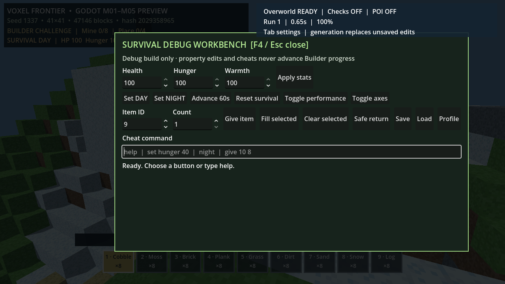

범위와 증거
- 0.25초 고정 스텝 DAY/NIGHT·HP·Hunger·Warmth
- F4 워크벤치: 속성·시간·아이템·저장/복귀·프로파일·시각화 제어
- 단위 57개, 헤드리스/실제 렌더 14개 단언 통과
- 4,800스텝 최신 P95 4.091ms (상태만의 CPU 마이크로벤치)
게임 플레이 증거

실제 렌더 창에서 열린 F4 Survival Debug Workbench.
다음 S02 게이트
식품·화톳불·적·사망·날씨·리스폰·생존 저장은 아직 없습니다. 다음은 화톳불/연료/보온 반경, v8 저장, 시나리오 계측, 내부 플레이테스트입니다.